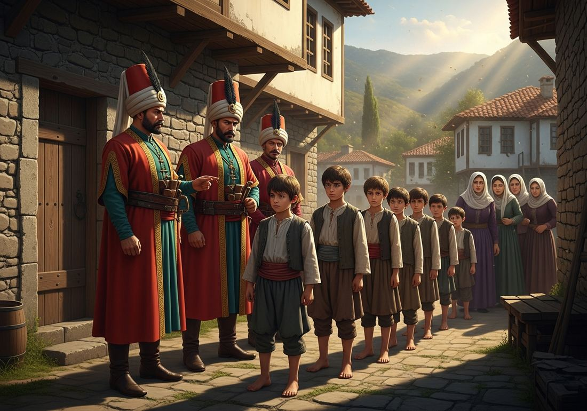
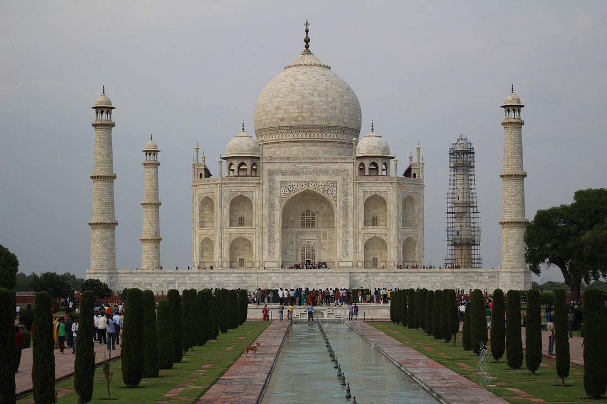
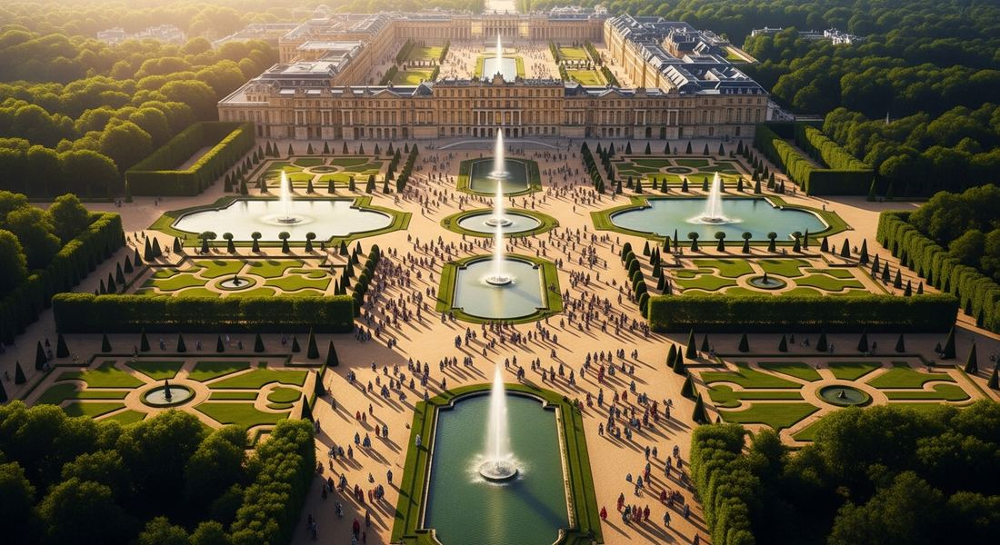
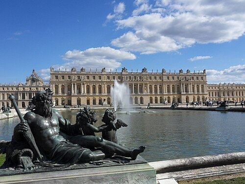
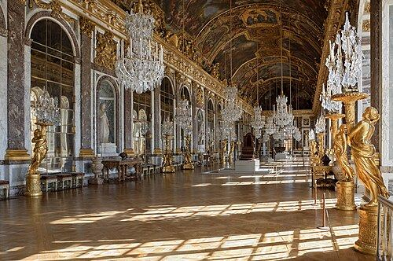
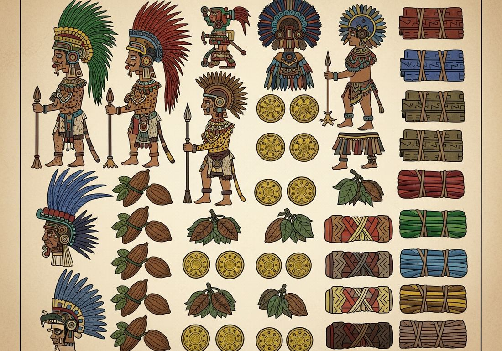
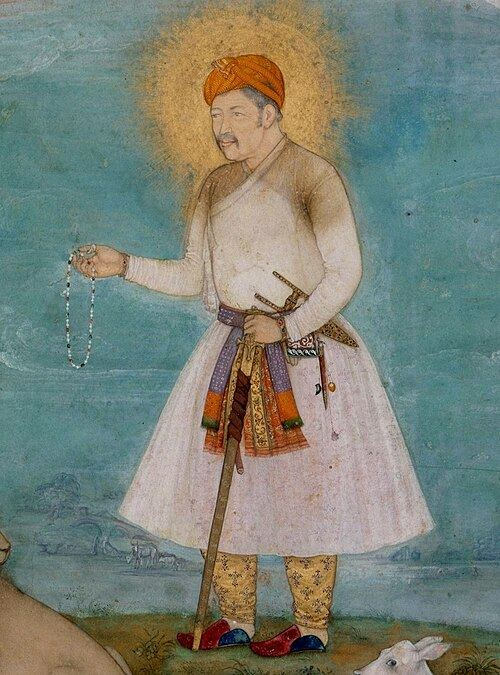

3.2 Empires: Administration
- LO-A: The problem of control — Military conquest is the easy part; governing a vast empire is the hard part. Land-based empires developed sophisticated systems to maintain centralized control without constant military force — through trained bureaucracies, religious legitimacy, symbolic displays of power, and efficient revenue extraction. Bureaucratic elites and military professionals —: The Ottoman devshirme system recruited Christian boys for imperial service, creating a class of trained officials with no hereditary power base. The salaried samurai of Tokugawa Japan were disarmed former warriors now dependent on government salaries. Both examples show rulers neutralizing potential challengers by creating loyalists dependent on state patronage.
- LO-B: Identify specific examples of bureaucratic administration, religious legitimation,… — Religion and art as legitimation —: Every empire used religion and monumental architecture to communicate the ruler's sacred authority. The Ottoman sultan claimed the caliphate; Mexica rulers performed human sacrifice to feed the sun; Louis XIV of France governed by divine right; the Mughal emperors built the Taj Mahal as both a tomb and a statement of imperial grandeur. These weren't propaganda — rulers genuinely believed in these frameworks, and so did their subjects. Tax collection innovations —: The Mughal zamindar system, Ottoman tax farming, Mexica tribute lists, and Ming hard-currency taxation all demonstrate creative approaches to extracting revenue from diverse, large populations — a challenge that required constant administrative innovation.
Try each question before revealing the answer.
1. Why would an emperor prefer officials who were entirely dependent on imperial favor (like devshirme boys) over officials from powerful noble families?
2. Why would a ruler commission an expensive monument like the Taj Mahal or Versailles that cost enormous resources to build, rather than spending those resources on practical military or economic projects?
3. The Mexica (Aztec) empire practiced human sacrifice on a large scale, partly as a state ritual. What political functions might human sacrifice serve for the ruling class, beyond its purely religious meaning?
4. The Ming Dynasty required taxes to be paid in silver currency rather than in goods or labor. What problems would this create for rural peasant farmers, and what would they have to do to comply?
5. Louis XIV's doctrine of divine right claimed that kings ruled by God's appointment and were accountable to God alone, not to parliaments or nobles. What practical political advantage did this doctrine provide?
- Explain how rulers used a variety of methods to legitimize and consolidate their power in land-based empires from 1450 to 1750
- Identify specific examples of bureaucratic administration, religious legitimation, monumental architecture, and tax collection systems
Tap a term for its definition.
-
Definition: The Ottoman system of conscripting young Christian boys from the Balkans, converting them to Islam, educating them at the palace, and training them for imperial service as soldiers (Janissaries) or administrators. Significance: Created a loyal bureaucratic and military class with no independent power base; paradoxically provided social mobility for those selected; demonstrates "bureaucratic elites or military professionals" used to consolidate imperial power.
-
Definition: Under the Tokugawa shogunate in Japan (1603–1868), former warrior-lords (samurai) who had their weapons confiscated and were converted into paid government bureaucrats dependent on stipends from the shogun. Significance: A classic example of rulers neutralizing a potentially threatening military class by making them economically dependent on the state; the samurai became administrators, not independent military powers.
-
Definition: The European political-religious doctrine (prominent in the 16th–17th centuries) holding that monarchs rule by God's direct appointment and are accountable to God alone, not to parliaments, nobles, or subjects. Significance: Used by rulers like Louis XIV of France to justify absolute monarchy; provided a religious framework that made political obedience a spiritual duty; the English Civil War (1640s) and later Enlightenment philosophy directly challenged this doctrine.
-
Definition: In the Mughal Empire, a local landowner or hereditary tax collector who held the right to collect taxes from peasants in a given territory, forwarding a portion to the imperial treasury and retaining the rest as income. Significance: The Mughal zamindar system was a form of "tax farming" — delegating revenue collection to intermediaries with a stake in maximizing yields; it made the empire fiscally efficient but also created a powerful class of intermediaries who sometimes resisted imperial control.
-
Definition: A system in which the government sells the right to collect taxes in a particular area to a private individual or group (the "tax farmer"), who pays the government a fixed sum upfront and keeps whatever they collect above that amount. Significance: Used by the Ottoman Empire and many other states; provided the government with guaranteed upfront revenue while delegating the administrative challenge of collection; but incentivized tax farmers to over-extract from the population, often causing resentment and uprisings.
-
Definition: Goods, labor, or currency that conquered peoples or subordinate states are required to deliver to an imperial power on a regular basis as acknowledgment of submission and a source of imperial revenue. Significance: The Mexica (Aztec) Empire was organized around tribute collection from conquered city-states — the Codex Mendoza lists in detail exactly what goods (cacao, feathers, textiles, gold) each subject city owed. Tribute was both economically essential and politically symbolic.
-
Definition: The quality of being accepted as rightful, valid, or justifiable; in political terms, the recognition by subjects that a ruler's authority is proper and ought to be obeyed. Significance: Rulers throughout history have understood that force alone cannot sustain an empire — subjects must believe the ruler's authority is legitimate (divine, traditional, rational) to provide willing cooperation. Religion, art, architecture, and administration are all tools of legitimation.
-
Definition: The Ottoman administrative system granting recognized religious communities (Greek Orthodox, Armenian Christian, Jewish) autonomy to govern their own internal affairs — marriage, inheritance, education — under their own religious leaders, in exchange for loyalty and tax payment. Significance: Allowed the Ottomans to govern enormous religious diversity without constant conflict; religious communities maintained their identities and practices; the system provided a model for governing pluralistic empires without enforcing religious uniformity.
Bureaucratic Elites and Military Professionals: Loyalty Over Lineage

The Ottoman devshirme: Christian boys from the Balkans selected for conversion, education, and imperial service. Those who entered the system might rise to become Grand Vizier — the empire's highest official — but owed everything to the sultan's favor. Image credit not specified.
One of the most fundamental challenges facing any ruler of a large empire is this: how do you prevent the people you appoint to govern on your behalf from accumulating enough power to challenge you? Hereditary aristocracies — nobles who inherit their land, title, and regional power — are a perpetual threat to central authority. They can raise private armies, form alliances, and resist imperial commands from behind the walls of their own castles.
Land-based empires of 1450–1750 developed innovative solutions to this problem. The common thread: create a class of trained officials and military professionals whose status depends entirely on imperial appointment rather than birth.
The most elaborate example was the Ottoman devshirme system. Every few years, Ottoman recruiters traveled through the Balkan provinces (Greece, Bulgaria, Serbia, Bosnia) and selected promising boys from Christian families — typically the strongest, most intelligent children aged 8–20. These boys were taken from their families, converted to Islam, brought to Istanbul, and given the finest education available in the Ottoman world: languages, military arts, administration, and Islamic theology. The most talented entered the Enderun (the palace school) and might eventually become governors, admirals, or Grand Viziers. The less academically gifted became Janissaries — the empire's elite infantry.
The genius of the system from the sultan's perspective: these men had no family lands, no dynastic claims, no regional power bases. They literally owed their existence as social beings — their names, religion, status, and income — to the imperial system. A Grand Vizier of devshirme origin could be executed or imprisoned without triggering a noble family's rebellion, because he had no noble family. This made them far more controllable than the old Turkish aristocracy.
A different solution emerged in Tokugawa Japan (1603–1868). The Tokugawa shoguns faced the threat of the daimyo — powerful regional lords with their own samurai armies who had fought civil wars for over a century. Rather than destroying the samurai class, the Tokugawa transformed it. The salaried samurai were required to live in castle towns (not on their rural estates), were paid a government stipend, and had their weapons regulated. They became, in effect, government bureaucrats in warrior costume — dependent on Tokugawa salaries, not on independent land revenues. Their military skills and samurai identity remained, but their independence was systematically eliminated.
Religion as Political Legitimation: Sacred Authority
Across all cultures and periods, rulers have used religion to legitimize their authority. In the 1450–1750 period, three specific examples appear on the AP exam as illustrative cases:
Mexica (Aztec) human sacrifice was not merely a religious ritual — it was a political technology. The Mexica cosmology held that the sun required human blood to continue its daily journey across the sky; without sacrifice, the world would end. The emperor, as the intermediary between humanity and the gods, bore responsibility for ensuring the sun's survival through ritual offerings. This made the emperor cosmically necessary, not merely politically powerful. The great sacrificial ceremonies at Tenochtitlan's Templo Mayor were attended by tribute-paying subject rulers from across the empire, all witnessing the demonstration of Mexica divine authority. Captive warriors from defeated enemies provided the sacrificial victims, making military expansion simultaneously a religious obligation and a political demonstration of dominance.
European divine right theory, most fully developed by Louis XIV of France ("The Sun King," r. 1643–1715), held that monarchs received their authority directly from God and were accountable to God alone. Louis famously remarked "L'état, c'est moi" ("I am the state") — not as arrogance, but as a theological statement: the king's will and the state's interest were one, because God appointed him. This doctrine justified the centralization of power at Versailles, the marginalization of the French nobility, and the elimination of religious minority rights (the Edict of Fontainebleau, 1685, revoked Protestant rights in France). Divine right was not unique to France — James I and Charles I of England made similar claims, with less success, eventually provoking the English Civil War.
Songhai's promotion of Islam demonstrates how rulers adopted religion strategically. The Songhai Empire of West Africa (c. 1430–1591) included both Muslim and non-Muslim populations. Its rulers, particularly Askia Muhammad (r. 1493–1528), promoted Islam among the ruling class and within the capital city of Gao — funding mosques, supporting Islamic scholarship in Timbuktu, and performing the hajj — while not forcibly converting the rural population. Islam provided the ruling class with Arabic literacy (for record-keeping and administration), access to the trans-Saharan Muslim merchant networks (commercial advantage), and legitimacy within the broader Islamic world. Religion served practical administrative and commercial functions alongside its spiritual ones.
Art and Monumental Architecture: Power Made Visible

The Taj Mahal (completed 1653) — built by Mughal emperor Shah Jahan as a mausoleum for his wife Mumtaz Mahal. It required 20,000 workers over 20 years and consumed enormous imperial resources. Its perfection served as a statement of Mughal wealth, artistry, and divine favor simultaneously. Image credit not specified.
Rulers across all the land-based empires understood that building projects served political functions beyond their stated purposes. The AP exam specifically lists four examples of "art and monumental architecture" used to legitimize power:
Mughal mausolea and mosques: The Taj Mahal (completed 1653) is the most famous example of Mughal architectural legitimation. Built by Shah Jahan as a tomb for his wife Mumtaz Mahal, it required 20,000 workers and 20 years to complete, drew artisans from across the Islamic world, and incorporated white marble from Rajasthan inlaid with precious stones. Its perfection communicated Mughal wealth (no other ruler could commission such a project), artisanal excellence (the empire commanded the world's best craftsmen), and divine favor (its geometric perfection evoked paradise). The great mosque-building projects of Akbar and the Mughal dynasty similarly announced the empire's Islamic legitimacy while demonstrating material power.

The Palace of Versailles (construction begun 1661), built by Louis XIV to house the entire French court and government — 36,000 workers at peak construction, 2,000 rooms, 800 hectares of gardens. By forcing nobles to live at court, Louis could observe and control them directly. Image credit not specified.

The Palace of Versailles, west façade (c. 1700). The gardens stretched 800 hectares; the building housed 20,000 people at its peak — courtiers, servants, and government officials all under the king's eye. Public domain, Wikimedia Commons.
European palaces — Versailles: Louis XIV began construction of the Palace of Versailles in 1661, eventually relocating the entire French court there. The political function was as important as the aesthetic one: by requiring nobles to live at Versailles rather than on their country estates, Louis kept them under constant observation and dependent on royal favor for court appointments. A noble at Versailles could not be plotting rebellion on his estates. The palace's scale — 2,000 rooms, 36,000 construction workers at peak, 800 hectares of formal gardens — was deliberately designed to surpass anything any noble could build, making the king's superiority material and unavoidable. Every decoration, every ceremony, and every square meter of the palace communicated the same message: the Sun King was beyond comparison.

The Hall of Mirrors (Galerie des Glaces), Palace of Versailles, completed 1684. Designed by Jules Hardouin-Mansart, it housed 357 mirrors facing 17 windows overlooking the gardens. Public domain, Wikimedia Commons.
Qing imperial portraits: Qing emperors commissioned formal portraits showing them in full imperial regalia — dragon robes, jeweled crowns, formal posture — that combined Chinese artistic conventions with Manchu imperial symbolism. These were not merely decorative. Copies were distributed to provincial governments, displayed in official buildings, and sent as diplomatic gifts. They communicated imperial authority to populations that might never see the emperor in person. The portraits incorporated visual elements recognizable to different subject populations — Chinese aesthetic conventions for Han subjects, Tibetan Buddhist imagery for Tibetan subjects, Central Asian elements for Inner Asian subjects — making the emperor appear as the legitimate sovereign of multiple cultural traditions simultaneously.
Incan sun temple of Cuzco: The Coricancha (Temple of the Sun) in Cuzco was the religious and symbolic center of the Inca Empire. Its walls were lined with gold — gold being the metal of the sun, and the Inca emperor being the Son of the Sun (Sapa Inca). The temple housed the mummified bodies of past emperors, who were consulted as living ancestors. The Inca emperor's claim to divine authority was thus architectural, religious, and genealogical simultaneously — embedded in the physical space of the empire's holiest building and in the bodies of his sacred ancestors preserved within it.
Tax Collection and Revenue: Funding the Imperial Machine

A page from the Codex Mendoza (c. 1541) — an Aztec document listing tribute owed by subject city-states: feathered headdresses, warrior costumes, cacao pods, gold discs, and textile bundles. The precision of Mexica tribute accounting reveals a sophisticated imperial revenue system. Image credit not specified.
No empire can function without revenue. Land-based empires of 1450–1750 developed a variety of tax collection systems, each adapted to their specific populations, geographic conditions, and administrative capabilities. Four specific examples:
Mughal zamindar tax collection: The Mughal Empire did not directly tax peasants — it delegated tax collection to zamindars (hereditary local landowners), who collected taxes from peasants and forwarded a portion to the imperial treasury. The zamindar system reduced the administrative burden on the central government (the empire didn't need thousands of direct tax collectors for every village) and created a class of tax collectors with a personal stake in agricultural productivity. The problem: zamindars often over-extracted from peasants and under-reported to the imperial treasury. The Mughal Emperor Akbar created a sophisticated land revenue assessment system (zabt) attempting to regulate zamindar collection by calculating each region's productive capacity — an early form of systematic fiscal administration.

Emperor Akbar with a lion and calf (c. 1630), by Govardhan. Metropolitan Museum of Art. Public domain, Wikimedia Commons.
Ottoman tax farming (iltizam): The Ottoman government auctioned the right to collect taxes in specific provinces to private bidders. The winning bidder (the mültezim, or tax farmer) paid the government a guaranteed sum upfront, then collected as much as possible from the population, keeping the surplus. This gave the Ottoman treasury guaranteed income without administrative complexity. The problem was structural: tax farmers were motivated to extract maximum revenue from the population in their brief collection period, often causing rural poverty, flight of peasants, and long-term economic damage. Over time, tax farming became increasingly exploitative and was a major grievance in provincial Ottoman revolts.
Mexica tribute lists: The Aztec Triple Alliance maintained precise records — in the form of illustrated codices like the Codex Mendoza — listing exactly what tribute each conquered city-state owed: quantities of cacao, maize, cotton textiles, warrior costumes, gold dust, feathered shields, and more. This was an administrative achievement: tracking tribute from dozens of subject cities across thousands of square kilometers without alphabetic writing, using pictographic accounting systems. Tribute was both economically vital (it redistributed luxury goods to Tenochtitlan's ruling class) and symbolically important (paying tribute was an act of submission acknowledged in public records).
Ming hard currency taxation: The late Ming Dynasty (16th century) shifted from collecting taxes in grain and labor to requiring payment in silver — a policy called the "Single Whip Reform." This had revolutionary consequences: it forced peasants into market economies (they had to sell goods to obtain silver), it created enormous demand for silver currency across China, and that demand connected China to global silver supplies. Spanish silver mined by enslaved Indigenous and African laborers in the Americas flowed eastward across the Pacific via the Manila Galleon trade to satisfy Ming China's tax demands. A fiscal reform in China thus became a driver of global economic integration — connecting the Americas, Spain, and Asia in a single commercial network.
These videos will help you review Empires: Administration and solidify key concepts before your exam.
- Providing opportunities for Christian subjects to maintain their religious traditions within the imperial administration
- Reducing the cost of imperial administration by using enslaved labor for government functions
- Creating a loyal class of trained officials whose status depended on imperial favor rather than hereditary power
- Integrating Balkan populations into the Ottoman military to defend against European Crusades
- The use of religious rituals to demonstrate divine favor and intimidate subject peoples into political submission
- The practice of human sacrifice as a fundamentally economic process driven by the need to control food supplies
- The Mexica Empire's rejection of military force in favor of purely religious means of governance
- The incorporation of conquered peoples' religious traditions into the official Mexica state religion
- The use of art and monumental architecture to intimidate foreign ambassadors and rivals into recognizing French military dominance
- The spread of Enlightenment ideas about the rational organization of government through the creation of an ideal planned community
- The French king's personal religious devotion expressed through his construction of a palace modeled on a sacred cathedral
- The use of physical relocation and court culture to neutralize the independent power of potentially threatening nobles
- The Mughal Empire's rejection of pre-existing Indian administrative traditions in favor of entirely novel fiscal methods
- The development of systematic revenue assessment methods to regularize tax collection across a large and diverse empire
- The complete replacement of the zamindar class with professional imperial tax collectors trained at the central court
- The Mughal Empire's exclusive reliance on agricultural taxation, excluding all commerce and trade from imperial revenue
- The integration of Chinese, American, and European economies into an interconnected global commercial network
- The decline of Chinese agricultural production as peasants shifted from farming to mining silver in Chinese mountain provinces
- The replacement of Chinese merchant classes with Spanish and Portuguese traders who controlled access to silver
- The Chinese government's direct colonization of the Americas to secure independent access to silver supplies
Answer parts A, B, and C. Each part requires a separate, direct response. Do not write an essay.
Part A
Briefly describe ONE specific way a land-based empire recruited or trained officials to consolidate centralized political control in the period 1450–1750.
Part B
Briefly explain ONE specific way a ruler used religious ideas, art, or monumental architecture to legitimize political authority in the period 1450–1750.
Part C
Briefly explain ONE unintended consequence of a land-based empire's tax collection system in the period 1450–1750.
Write a full essay with thesis, contextualization, evidence, and historical reasoning. This prompt asks you to compare two types of imperial control and evaluate their relative importance. Historical reasoning skill: Argumentation / Comparison.